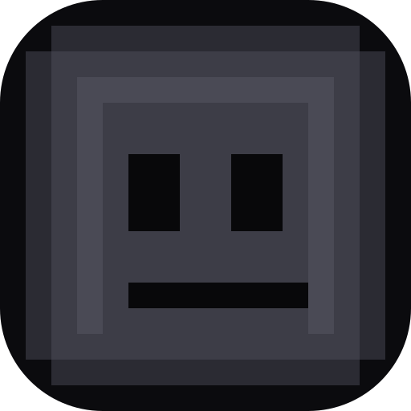

Settings
Everything here saves to this browser the moment you change it. Cards with a chevron fold open when you need them.
Look and feel
Theme, accent, packs, and what sits behind the page.
ThemeDark, NULL's default.
AccentOne colour, or a whole theme pack.
Theme packsA whole palette plus a live backdrop. Free ones are always there, the rest unlock in the Shop. None
Background particlesA layer of drifting motion behind every page, on its own or over a pack. Off
Four of them are free and the louder ones unlock in the Shop. Applying the one that is already on switches particles back off.
Paste a link or upload one from this device. It sits under your theme pack and particles, and the page tint is laid over it so text stays readable.
Locked. The background image unlocks in the Shop with coins you earn by playing. Open the Shop →
Uploads are stored in this browser, so keep them small: a link is lighter.
Effects
The extras around the screen edge and the seasons.
Layout and speed
How much room NULL gives everything, and how hard it works.
Layout compactnessThe whole site's spacing, from tight to airy.
NavigationWhere the site's own nav lives.
PerformancePick how light NULL runs on your device.
Browsing
What the tab looks like, and how to make NULL disappear.

Untitled Slide - Google Slides Default (Google Slides)Press the key anywhere on NULL to jump straight to a boring-looking site. Useful when someone walks up. The browser tab preset still applies, so the tab already looks like work.
Your stuff
Install NULL, carry your profile around, and the resets.
Recently played has its own clear button on the home page, this is only for full resets.
Everything NULL knows about you lives in this browser. Anything that shares NULL's own address (a second tab, the installed app window, and the cloaked about:blank / blob: copies) stays in sync with the others on its own. A genuinely different address (another host, a preview link) can't see it, so download your file and load it up on the other side.
Nothing matches that.